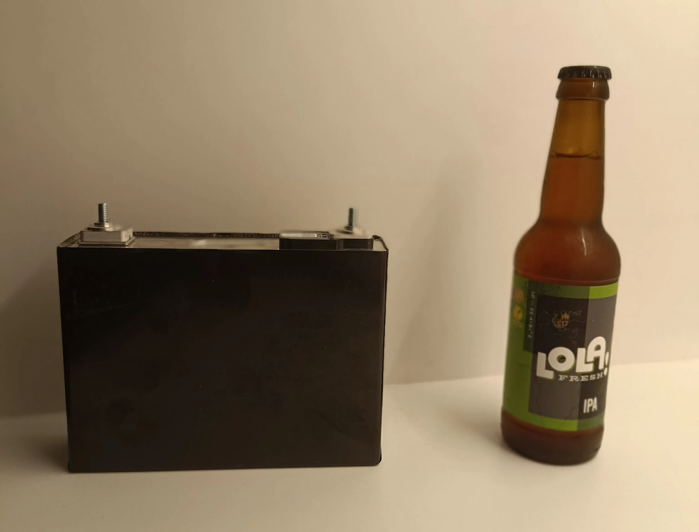

For the kart, we decided to use a 48 V nominal battery setup. This was mostly a compromise between keeping the voltage relatively low and safe, not needing too many cells, and still being able to supply the current needed by the motor. Since the motor is rated at 5 kW, the maximum current draw is roughly 100 A, so a 15S configuration made sense.
At first, a pack made from cylindrical cells was an option, but in practice it would have made the build more complicated. The main issue was that we did not have proper spot-welding equipment, so assembling a reliable cylindrical-cell pack would have been harder. Because of this, we chose to use high-capacity prismatic cells instead. These are much easier to work with mechanically, since the busbars can be bolted directly onto the cell terminals.
The final battery pack is a 15S1P configuration using Samsung SDI 94 Ah prismatic cells. These cells were a good fit for the project for a few reasons. They have already been used in the BMW i3 battery pack, so they are not an unknown or untested option. They also have a very high maximum current rating of 400 A, which gives us a lot of margin compared to what the motor should normally draw. Their 94 Ah capacity is also more than enough for our application.
Another reason we liked these cells is that they are easier to package than pouch cells. They do not need the same level of compression and careful mechanical support, which makes the battery enclosure simpler. Also, since they are made by Samsung SDI, we had more confidence in their quality compared with many cheaper battery options.
The downside is mainly weight and size. Each cell weighs about 2 kg, so the cells alone add around 30 kg to the kart. They are also quite large, so the complete battery pack takes up more space than a custom cylindrical-cell pack would.

To make the pack fit better on the chassis and keep the weight distribution reasonable, we split it into two parts, one on each side of the kart. One side holds 6 cells and the other side holds 9 cells.
For monitoring the battery voltages and temperatures, we chose the Analog Devices LTC6810 six-cell battery monitor. One useful feature of this IC is that it can operate with a low minimum cell stack voltage, so we can connect only 3 cells to it instead of needing to use all 6 channels. It also uses isoSPI communication, which gives better isolation and noise immunity. This is important in a vehicle, because the electrical environment can be quite noisy and the system is not referenced to a fixed ground in the same way as a normal bench setup.
So in the end, the monitoring system uses three LTC6810 slave boards, together with one master board based on the Analog Devices LTC6820 isoSPI interface.